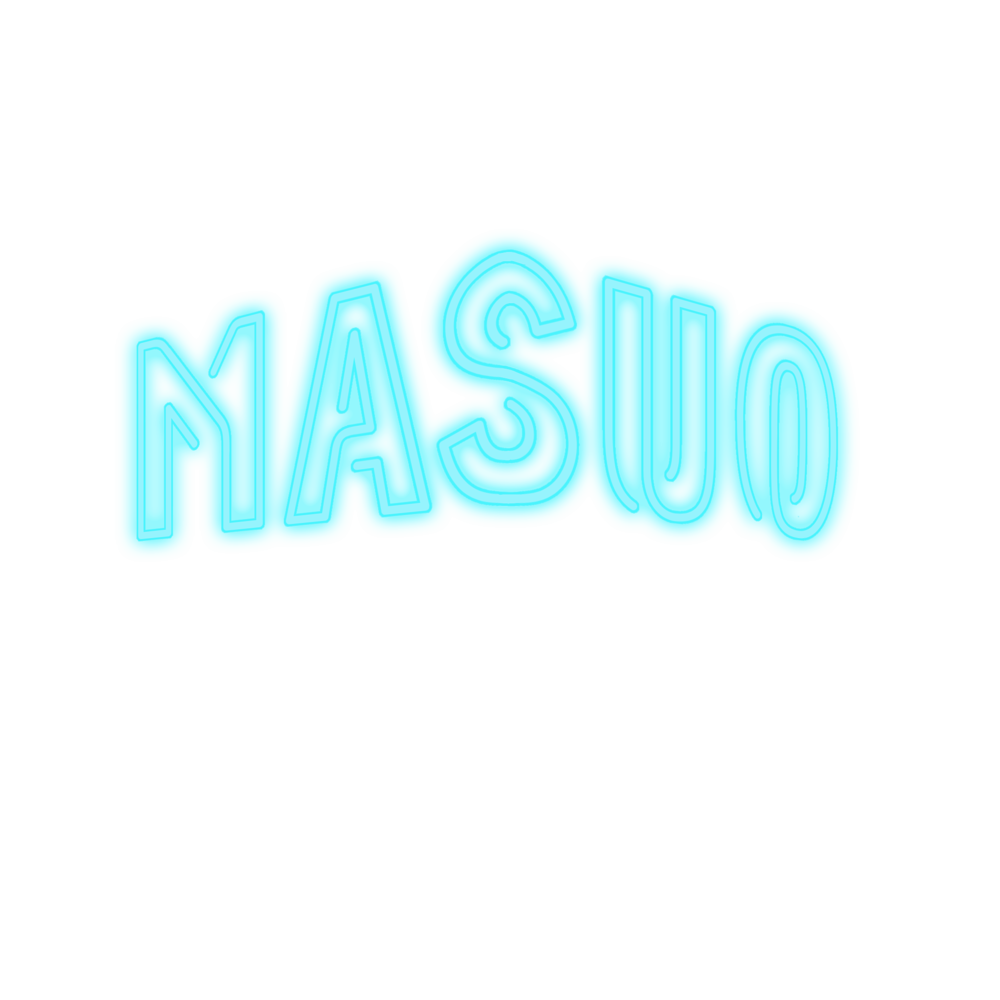

<!--
https://github.com/nicolas-cusan/destyle.css
-->


<!--PC向けスタイル-->
<style>
    /*背景の半透明機構*/
    @charset "UTF-8";

/*ALL*/
body{
    width: 100vw;
    height: 100vh;
}

a:hover,
a:focus{
    border-bottom: solid 2px;
}

/*Color Var*/
body{
  --header-nav-color: #fff;  
  --header-nav-background-color: #000;
}

/*Page Navigation*/
#page-nav {
    width: 100vw;
    height: 52px;
    position: fixed;
    top: 0;
    padding-left: 10px;
    padding-right: 10px;
    color: var(--header-nav-color);
    background-color: var(--header-nav-background-color);
    animation: slideshow 1s ease-in-out;
}

#page-nav,
#page-nav-right{
    display: flex;
    justify-content: left;
    align-items: center;
}

#page-nav-right > *{
    margin-left: 20px;
}

@keyframes slideshow {
    0%{
    margin-top: -52px;
    }
    100%{
    margin-top: 0;
    }
}

#page-nav img{
    width: 60px;
    height: 60px;
    object-fit: cover;
}

</style>
<head>
  <link rel="stylesheet" href="https://unpkg.com/destyle.css@3.0.2/destyle.min.css"><!-- destyle.css -->
</head>
<!--ヘッダー本体-->
    <nav id="page-nav">
      <h1><a href=""></a></h1>  
      <ul id="page-nav-right">
        <li><a href="">TOP</a></li>
        <li><a href="">企画一覧</a></li>
        <li><a href="">MAP</a></li>
        <li><a href="">タイムテーブル</a></li>
        <li><a href=""></a></li>
      </ul>
    </nav>
  